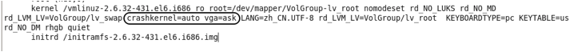
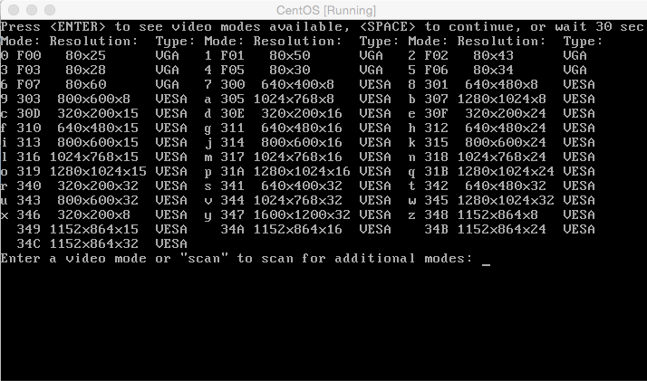

Centos分辨率
virtualbox里新安装的Centos 7 的分辨率默认的应该是800*600。 如果是‘最小化安装’的Centos7 进入的就是命令模式 。如果安装的是带有GUI的Centos7 可在桌面模式下 Ctrl+Alt+F1/F2/F3/F4 组合件来切换命令模式和桌面模式。进入命令模式 开始修改操作： 输入下面命令：
|
|
1、修改grub.cfg文件： 在标注地方末尾加上“vga = ask“，然后保存grub.cfg文件。

vga = ask意味着每次开始的时候都会询问分辨率。如果确定了，也可以将ask改成具体的分辨率指（下文图示）。
2、重启reboot，会看到下面界面：

根据自己的屏幕选择合适的分辨率了，输入分辨率代码，Enter键确认。 例如我的电脑选择最后一项，输入代码“34c”
Copyright@david Email:zhytwj2018@163.com